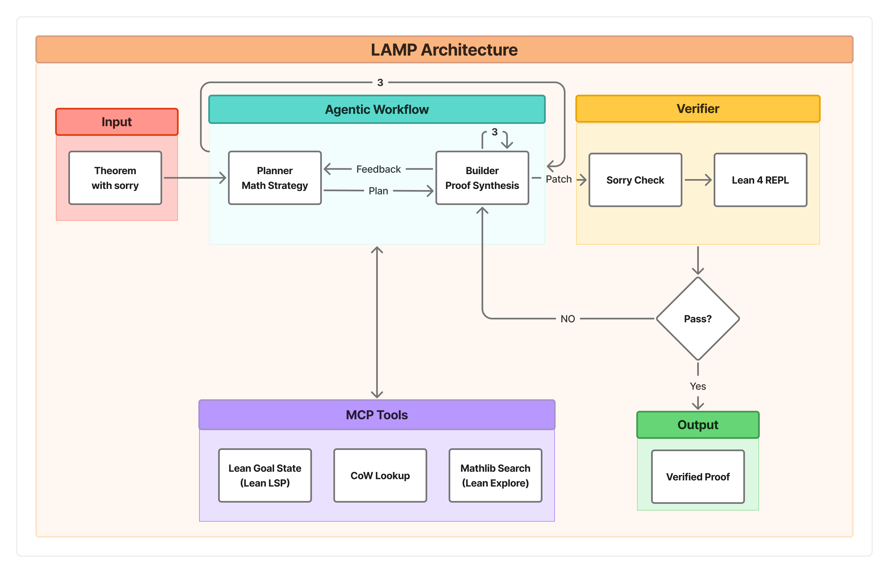

Presents a multi-agent framework that synthesizes verified Lean 4 proofs using domain-specific ontology access via MCP.
Abstract
Large language models are increasingly capable of mathematical reasoning, but the proofs they generate are often unreliable and hard to verify. Interactive theorem provers such as Lean 4 address this by accepting only kernel-checked proofs; however, their reach is bounded by the formalized knowledge available. While Mathlib, a repository of formalized Lean 4 theorems that covers diverse mathematical areas, certain specialized areas remain underrepresented; notably, the domain of Combinatorics on Words (CoW). CoW studies sequences, exploring their properties such as periodicity, borders, conjugacy, and morphisms. As a result, specialized provers, trained on Mathlib-centered data, lack the lemmas to operate in CoW. We present two contributions. First, we introduce a Lean 4 formalization of CoW containing eight modules and 93 declarations of core definitions and foundational lemmas. Second, we present LAMP, a multi-agent framework that synthesizes kernel-verified Lean 4 proofs by providing explicit, structured domain knowledge at inference time through an ontology, rather than by fine-tuning a prover. LAMP coordinates a Planner, Builder, and Verifier with Model Context Protocol based access to a domain-specific CoW ontology. In a suite of 90 CoW theorems that span all eight modules and three difficulty levels, LAMP synthesizes verified proofs for 96.7% of theorems, substantially exceeding both an unscaffolded baseline and existing specialized provers. An ablation shows that removing LAMP's tool-grounded architecture or its Planner/Builder separation each cost roughly 12 percentage points, even with the backbone model held fixed.
Problem
Specialized Lean provers trained on Mathlib-centered data fail on domains not yet formalized, such as Combinatorics on Words (CoW), because they lack the definitions and lemmas to operate there.
Approach
Introduces a Lean 4 library for CoW (8 modules, 93 declarations) and LAMP, a multi-agent framework coordinating a Planner, Builder, and Verifier with Model Context Protocol-based access to a domain-specific CoW ontology. Domain knowledge is provided at inference time rather than through fine-tuning.

Figure 2 : LAMP architecture and data flow
Results
LAMP synthesizes verified proofs for 96.7% of 90 CoW theorems across three difficulty levels. DeepSeek-Prover-V2 7B achieves 8.9%, Kimina-Prover 7B 3.3%, and Goedel-Prover-V2 32B 1.1% on the same suite. Ablation shows removing MCP tools or the Planner/Builder separation each costs roughly 12 percentage points.